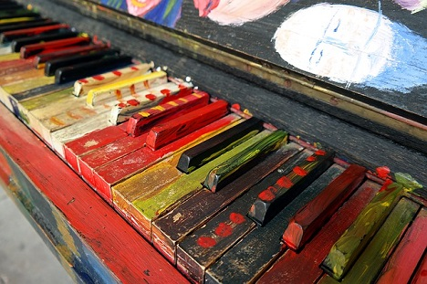

"Department of Education officially recognises Colour Strings Method in Ireland"
"The Department of Education has formally recognised the Colour Strings method of music tuition in Ireland" At a short musical performance by the children of 'Musicland' School of Music, The Education Minister, Richard Bruton paid tribute to the children who had performed a rendition of Beethoven's 'Ode to Joy' for him". He described Colour Strings as the way forward in the initial musical education of young children. Colour Strings is a fun method of introducing children to music without delving straight into the more daunting world of music theory"

"Never too young to become buskers"
"A group of children from Musicland School of Music took to the streets of Dublin to raise money for The Irish Deaf Society. played a selection of classical pieces on instruments such as violin, guitar, Flute and keyboard. AS they are very young, they were accompanied by parents at all times, who helped out by shaking money money boxes. At the end of the day, it was estimated that they had collected well over 500 euros for The Irish Deaf Society"
"New Colour Strings app to be launched in December"
"The Colourstrings app is due to be launched before Christmas. This unique method of teaching music to children using a colour coded system of music notation will be available for android devices and also for users of Apple devices. The Colourstrings app will include all the essential features of the innovative method such as Colour-coded musical notation, along with numerous practice games in pitch, beat and rhythm. It is hoped that it will be also used as an educational tool in primary and seconday school music classes"
Colourstring's goal is to: teach music to children in a fun and intuitive way.